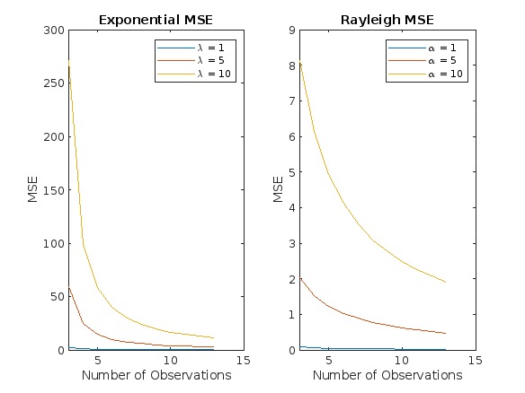
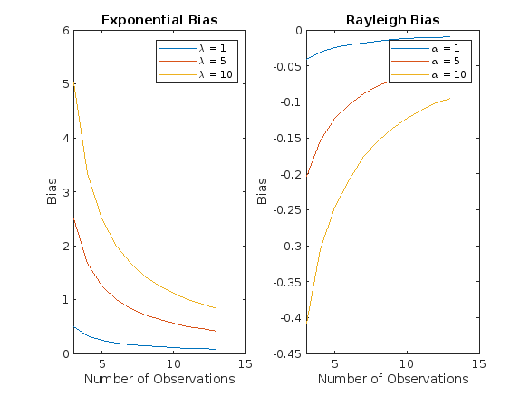
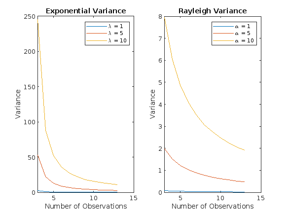

Nishat Ahmed, Armaan Kapoor, Nicolette Thiro
Contents
Stochastics Project 3
clc;
clear;
close all;
Part 1:
Generate random draws from both of the exponential and Rayleigh random variables. You can use the EXPRND and RAYRND functions in MATLAB for this. Derive by hand, and implement ML estimators in MATLAB and plot the MSE with respect to # of observations. On separate plots, plot the bias and the variance of your estimators, with respect to the # of observations. Do this for a couple of values of lambda.
%setup N = 1000000; observation = 3:13; lambda = [1 5 10]; alpha = [1 5 10]; %pre-allocate memory MSE_exp1 = zeros(1,length(observation)); bias_exp1 = zeros(1,length(observation)); var_exp1 = zeros(1,length(observation)); MSE_exp2 = zeros(1,length(observation)); bias_exp2 = zeros(1,length(observation)); var_exp2 = zeros(1,length(observation)); MSE_exp3 = zeros(1,length(observation)); bias_exp3 = zeros(1,length(observation)); var_exp3 = zeros(1,length(observation)); MSE_rayleigh1 = zeros(1,length(observation)); bias_ray1 = zeros(1,length(observation)); var_ray1 = zeros(1,length(observation)); MSE_rayleigh2 = zeros(1,length(observation)); bias_ray2 = zeros(1,length(observation)); var_ray2 = zeros(1,length(observation)); MSE_rayleigh3 = zeros(1,length(observation)); bias_ray3 = zeros(1,length(observation)); var_ray3 = zeros(1,length(observation)); ind=1; for i = observation %calculate the MSE, bias and variance for each distribution and for %each # of observation %MSE is found by taking the mean square of the ML %estimator-(lambda if exponential; alpha if Rayleigh) %bias is found by taking the mean of the ML estimator and subtracting %alpha/lambda from the mean %variance is found by taking the variance of the ML estimator [MSE_exp1(ind),bias_exp1(ind),var_exp1(ind)]= exponential_mse_bias_variance(N,i,lambda(1)); [MSE_exp2(ind),bias_exp2(ind),var_exp2(ind)]= exponential_mse_bias_variance(N,i,lambda(2)); [MSE_exp3(ind),bias_exp3(ind),var_exp3(ind)]= exponential_mse_bias_variance(N,i,lambda(3)); [MSE_rayleigh1(ind),bias_ray1(ind),var_ray1(ind)]=rayleigh_mse_bias_variance(N,i,alpha(1)); [MSE_rayleigh2(ind),bias_ray2(ind),var_ray2(ind)]=rayleigh_mse_bias_variance(N,i,alpha(2)); [MSE_rayleigh3(ind),bias_ray3(ind),var_ray3(ind)]=rayleigh_mse_bias_variance(N,i,alpha(3)); ind=ind+1; end % plot the MSE for exponential and rayleigh distributions figure; subplot(1,2,1); plot(observation, MSE_exp1, observation, MSE_exp2, observation,MSE_exp3); title("Exponential MSE"); xlabel("Number of Observations"); ylabel("MSE"); legend("\lambda = " + lambda(1), "\lambda = " + lambda(2),"\lambda = " + lambda(3)); subplot(1,2,2); plot(observation, MSE_rayleigh1, observation, MSE_rayleigh2, observation, MSE_rayleigh3); title("Rayleigh MSE"); xlabel("Number of Observations"); ylabel("MSE"); legend("\alpha = " + alpha(1), "\alpha = " + alpha(2),"\alpha = " + alpha(3)); %plot the bias for exponential and rayleigh distributions figure; subplot(1,2,1); plot(observation, bias_exp1, observation, bias_exp2, observation, bias_exp3); title("Exponential Bias"); xlabel("Number of Observations"); ylabel("Bias"); legend("\lambda = " + lambda(1), "\lambda = " + lambda(2),"\lambda = " + lambda(3)); subplot(1,2,2); plot(observation, bias_ray1, observation, bias_ray2,observation,bias_ray3); title("Rayleigh Bias"); xlabel("Number of Observations"); ylabel("Bias"); legend("\alpha = " + alpha(1), "\alpha = " + alpha(2),"\alpha = " + alpha(3)); %plot the variance for exponential and rayleigh distributions figure; subplot(1,2,1); plot(observation, var_exp1, observation, var_exp2, observation, var_exp3); title("Exponential Variance"); xlabel("Number of Observations"); ylabel("Variance"); legend("\lambda = " + lambda(1), "\lambda = " + lambda(2),"\lambda = " + lambda(3)); subplot(1,2,2); plot(observation, var_ray1, observation, var_ray2,observation,var_ray3); title("Rayleigh Variance"); xlabel("Number of Observations"); ylabel("Variance"); legend("\alpha = " + alpha(1), "\alpha = " + alpha(2),"\alpha = " + alpha(3));  
Part 2
The data in the .mat file, data.mat, has been drawn from either an exponential distribution, or a Rayleigh distribution. Compute the max-likelihood estimate of the parameter using both. Using your estimators that you developed in part 2, compute the max-likelihood estimates of the parameter. Which distribution do you think the data was drawn from? Justify your answer.
load data.mat; data1 = data.'; % transpose data into column format so each observation is in a separate row [~, size] = size(data); % get the number of columns in data matrix and store in size variable %calculate the ML estimators alphaEstimator = sqrt(.5 * mean(data.^2, 2)); % square root of half the mean of the squared observations lambdaEstimator = size./sum(data,2); % calculate sum of observations in each row, lambda is the ratio o fthe number of observations to the sum of observations %get the sum of log likelihoods for exponential and rayleigh distribution %the pdf of an exponential distribution is given as lambdaEstimator * exp(-lambdaEstimator * data1 %the pdf of a Rayleigh distribution is given as data1/alphaEstimator^2 .*exp(-data1.^2/(2*alphaEstimator^2)) %sum of the the logarithms of the likelihoods exponentialLikelihood=sum(log(lambdaEstimator * exp(-lambdaEstimator * data1))); rayleighLikelihood= sum(log(data1/alphaEstimator^2 .* exp(-data1.^2/(2*alphaEstimator^2)))); disp("The sum of log likelihoods for exponential distribution is " +exponentialLikelihood) disp("The sum of log likelihoods for rayleigh distribution is "+rayleighLikelihood) %The log likelihood value measures how well a model fits. The higher the value, the better %the fit is. Since the rayleigh distribution has a higher likelihood, the data was most %likely drawn from a rayleigh distribution. % calculate mse, bias, and variance of the maximum likelihood estimator of % the scale parameter alpha of the Rayleigh distribution given i % observations from the distribution function [mse, bias, variance] = rayleigh_mse_bias_variance(N,i,alpha) rayleigh = raylrnd(alpha, [N i]); % generate N samples of i observations from Rayleigh distribution with alpha avg=mean(rayleigh.^2,2); % calculate sample mean of squared observations for each sample alpha2 = sqrt(.5 * avg); % calculate ML estimator of alpha using sample mean mse= mean((alpha - alpha2).^2); % calculate MSE of ML estimator by taking mean squared difference between alpha and ML estimator of alpha across all N samples bias = mean(alpha2) - alpha; % calculate bias of ML estimator variance = var(alpha2); % calculate variance of ML estimator using the vector of alpha2 values end function [mse, bias, variance] = exponential_mse_bias_variance(N,i,lambda) exponential = exprnd(1/lambda, [N i]); % generate N samples of i observations from exponential distribution with lambda add=sum(exponential,2); % calculate sum of observations for each sample lambda2 =i ./ add; % calculate ML estimator of lambda using sample sum of observations mse = mean((lambda- lambda2).^2); % calculate MSE of ML estimator by taking mean squared difference between lambda and ML estimator of lambda across all N samples bias= mean(lambda2) - lambda; % calculate bias of ML estimator variance = var(lambda2); % calculate variance of ML estimator using the vector of lambda2 values end
The sum of log likelihoods for exponential distribution is 1053.4625 The sum of log likelihoods for rayleigh distribution is 1365.5161